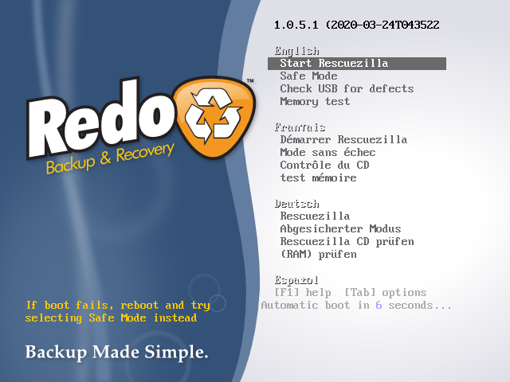
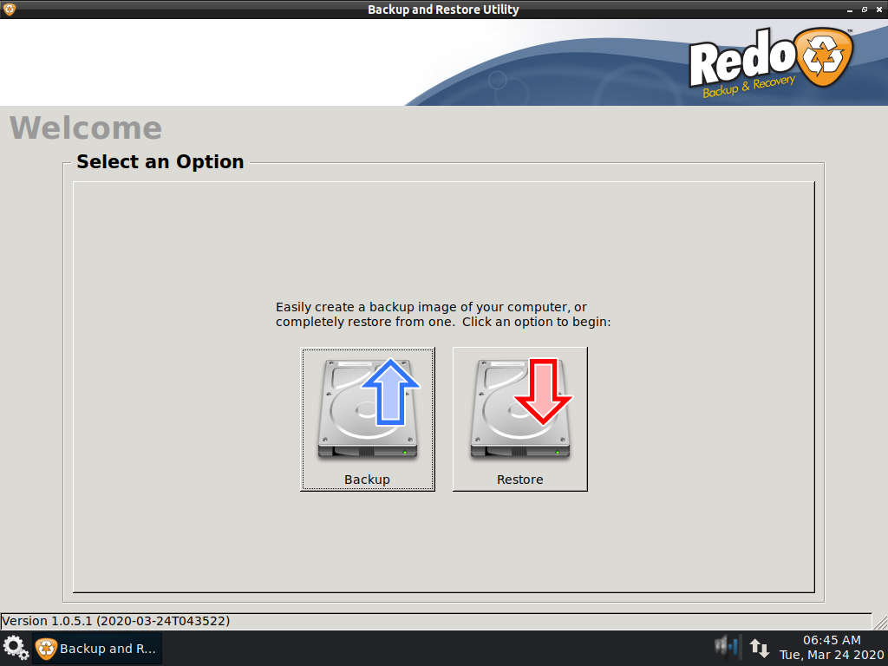
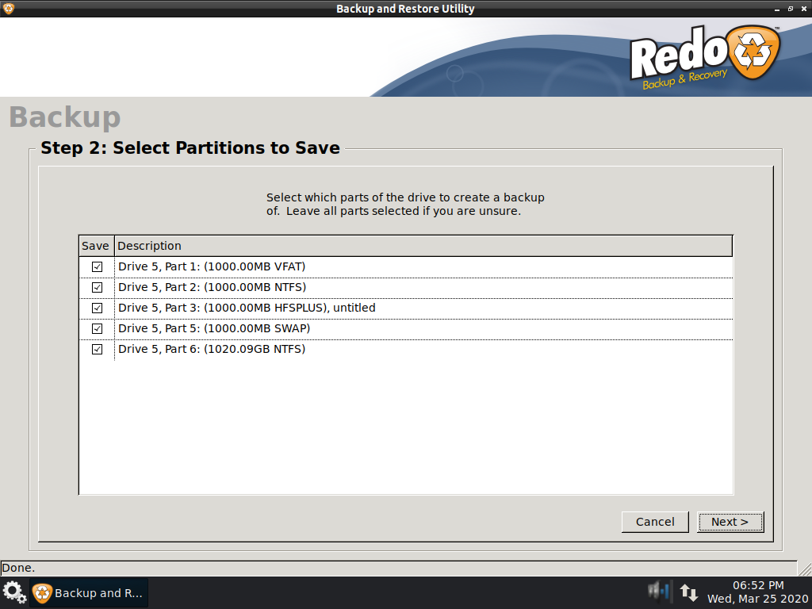
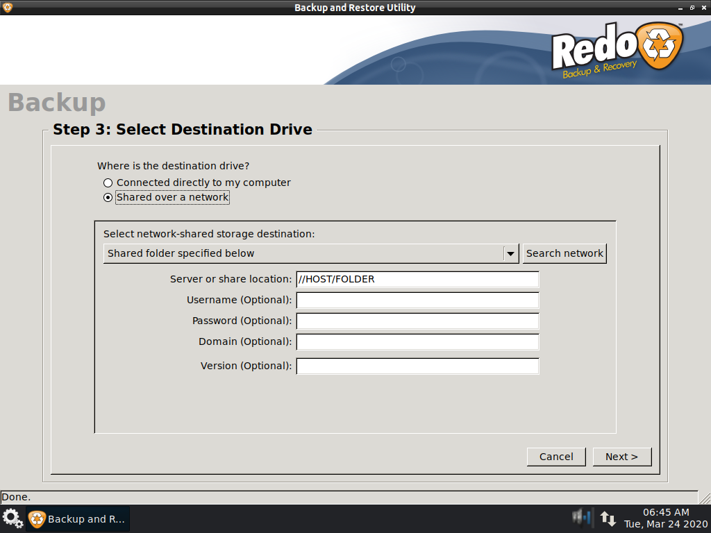
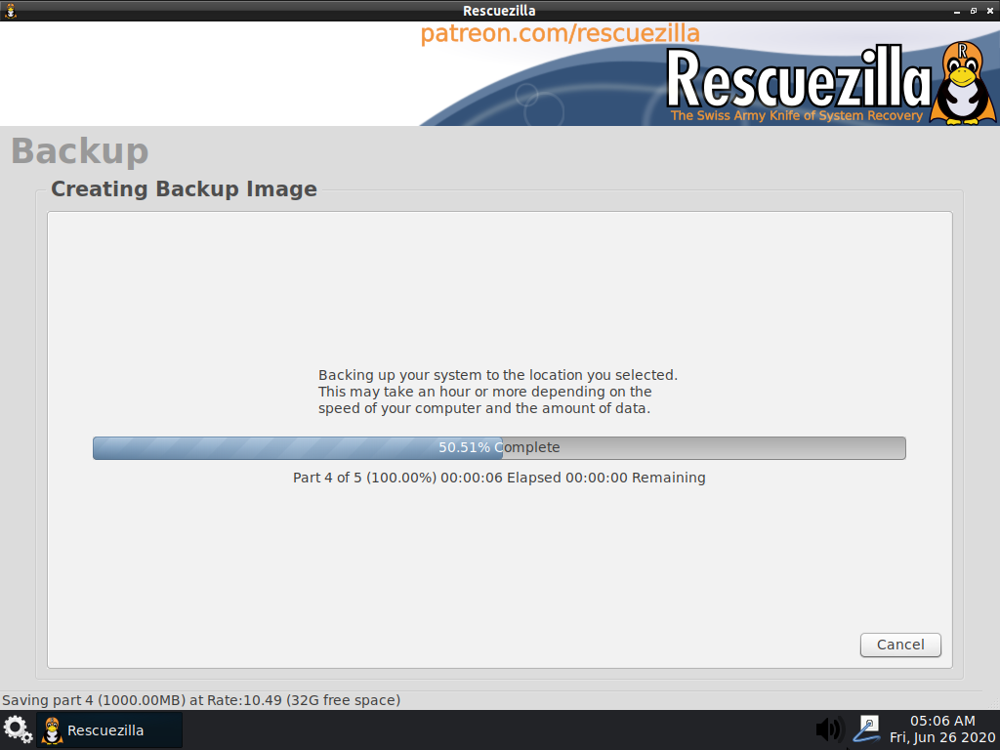
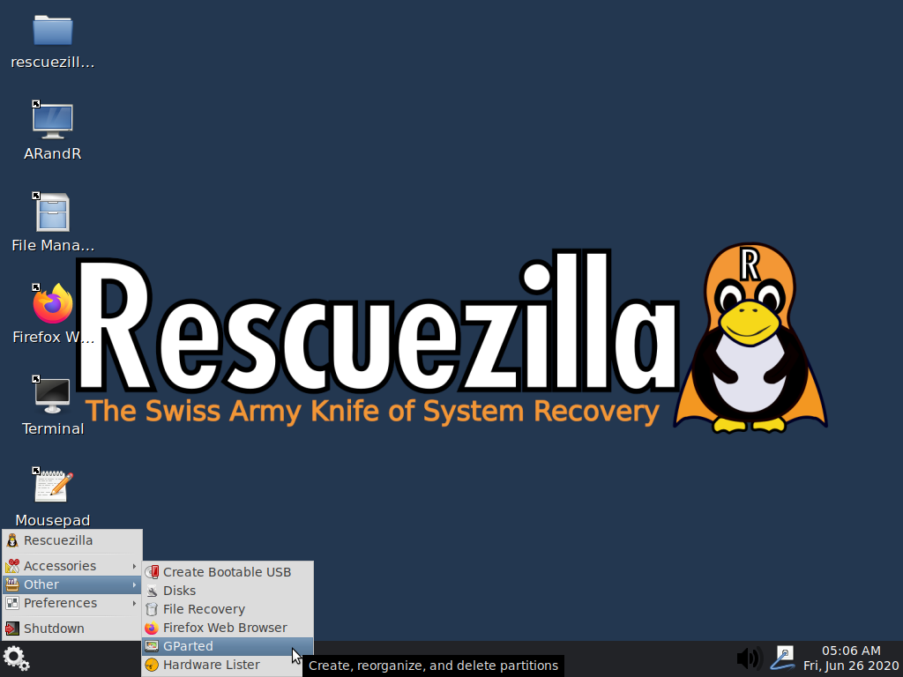
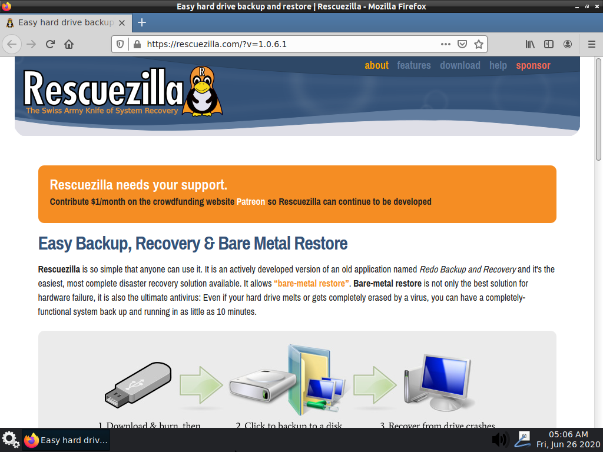
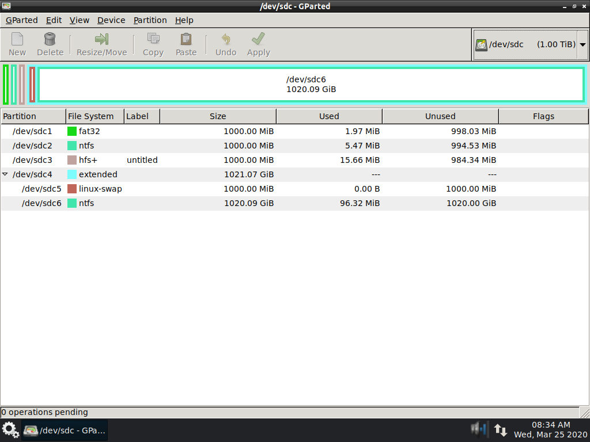

Like Rescuezilla? Dislike Rescuezilla?
Consider posting a review on AlternativeTo and giving the project a like! :-)
Disk imaging for all
Rescuezilla is an easy-to-use disk imaging application that's fully compatible with Clonezilla — the industry-standard trusted by tens of millions.
Disk imaging makes a backup of your computer's hard drive which is managed as files stored on an external hard drive. If your hard drive fails, you can restore your disk image and within a few minutes all your documents and settings will be restored to the exact same state they were in when the last snapshot was taken.
Rescuezilla lets you perform backup, restore and recovery actions, even if you aren't able to boot into your regular operating system. It does not matter if you use Windows, Mac or Linux. It doesn't matter if you can't even login. Download and write the ISO to a USB stick, and reboot your machine. Your computer will load a complete mini operating system with a point-and-click user interface into your computer's memory without writing any information to your hard drive.
Rescuezilla is an fork of Redo Backup and Recovery (now called Redo Rescue) after it had been abandoned for 7 years.

More Features, Less Complex
Rescuezilla has the most features coupled with the simplest, most user-friendly interface:
- Easy graphical user interface boots from USB in seconds
- No installation needed; runs from a USB stick or a CD-ROM
- Saves and restores Windows, Mac and Linux machines
- Fully interoperable with Clonezilla, the industry-standard trusted by tens of millions
- Access your files even if you can't log in
- Recover deleted pictures, documents, and other files
- Internet access with a full-featured browser
Screenshots
       {kind=link}
{kind=link}
{kind=link}
{kind=link}
{kind=link}
{kind=link}
{kind=link}
{kind=link}
Reviews and testimonials
Please consider posting a review of Rescuezilla on the very useful website AlternativeTo.Net. Consider giving the project a like too! :-)
Future development
Rescuezilla's ambitious roadmap is being developed on GitHub. Future plans include a graphical tool to extract individual files from backup images, a data-salvage tool to rescue data from dying hard drives and much more! Consider contributing $1/month on the crowdfunding website Patreon so that Rescuezilla can continue to be developed.
Discussion forum
Feel free to chat with other users on the official Rescuezilla Sourceforge forum.
See the feature list or download the latest version.
Rescuezilla needs your support.
Contribute $1/month on the crowdfunding website Patreon so Rescuezilla can continue to be developed